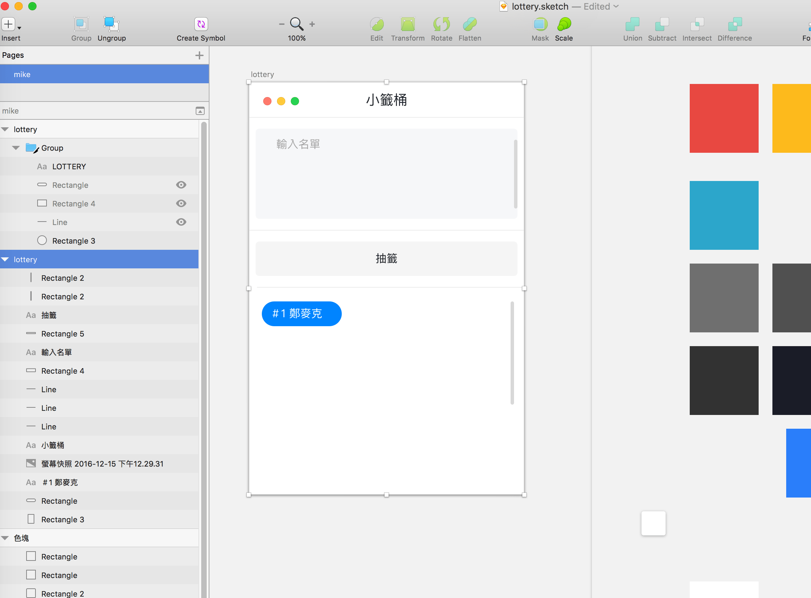
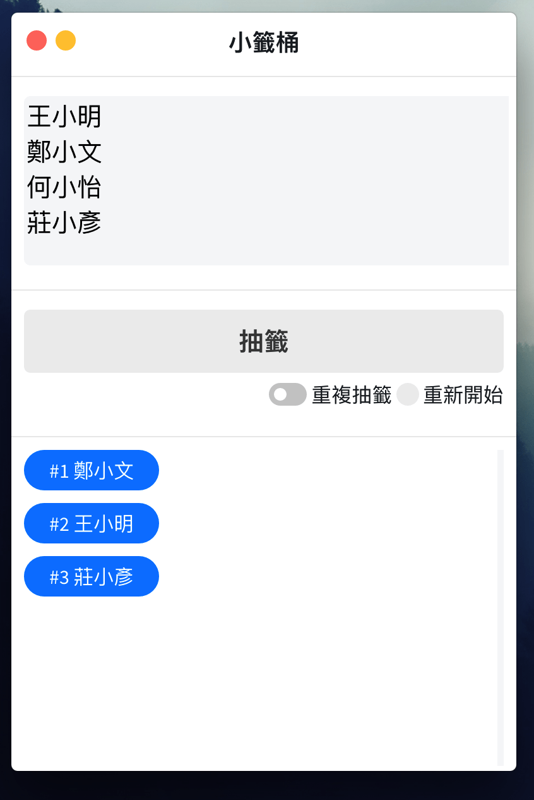

[學習筆記]ICAN小籤筒 使用Electron開發
一星期一筆記計畫，因為這兩天公司事情比較少，而又開始偷閒偷學而又開始亂寫文章。
這一星期一開始看了很多前端相關的文章，玩了一下vuejs，不過因為過陣子公司的產品要從瀏覽器端跨足到視窗程式，趁著偷閒也來玩玩electron。
ELECTRON 簡介
ELECTRON網址
http://electron.atom.io/
如網站字面意思所示：Build cross platform desktop apps with JavaScript, HTML, and CSS，
簡而言之就是透過F2E 前端技術進行跨平台的應用程式開發。
其實開發過簡單的視窗程式的人都知道，功能部分還好，但是介面流程及使用者體驗部分，總是不會如預期的容易開發，尤其大部分的介面元件都是套死的，沒有辦法太容易進行客製化。
但隨著html 及css的演進，在web application端開發使用者體驗已經變成一種必須的趨勢，更好的模組化工具，更方便的預處理器使得前端ＵＸ部分變得更為重要，而視窗程式部分目前似乎沒有太流行的這一塊工具。
就這樣隨著chrome瀏覽器開源的內核，前端的程式碼降臨到了視窗程式，除了難以避免的臃腫外[註1]，前端顛覆世界語言的趨勢開始擴張了。
ICAN小籤桶
這次開發的是因應實驗室人太多（不包含其他屆我們這一屆有9人）meeting每次上去報的順序都喬不攏，於是開始了小籤桶的應用。
好拉，其實是因為以前有寫過一個籤筒jQuery的版本，因為朋友公司活動要一款不公正籤筒，所以剛好改一下介面就可以直上了，當然上的是公正版本啊，嗚嗚。
設計圖
先上個設計圖。

其實每次開發相關專案都會有人問介面部分或是體驗流程部分是用哪些套件進行開發的，我只能說，哥不是交作業，其實切版或是設計核心還有工程部分幾乎都是出自我手，用的套件也很少，盡量都是用單工沒有相依性的，跑車之所以是跑車，就是因為每一輛都是限量手工。
這次設計是參考facebook message的風格，所以看起來有點熟悉是沒錯的，哈哈。
開發
開發部分是用jQuery進行開發，沒有用其他framework，第一是東西簡單不想要複雜化，第二是想要好一點的效能(誤)。
在初始設定前因為想要統一風格因此把預設的title bar給拔掉，在一開始main.js上將應用程式的frame給取消，頭尾都會不見了。
mainWindow = new BrowserWindow({ frame: false })
再用html方式建立新的header部分，當然用這種方法會遇到一些問題要克服，例如按鈕。
這邊參考
http://stackoverflow.com/questions/31171597/atom-electron-close-the-window-with-javascript?answertab=oldest#tab-top
裡面的解法，將客製化按鈕重新上事件。
而title標頭bar拖曳部分，之前公司前輩有跟我分享過，是另一種有趣的寫法，寫進css裡面。
.header {
-webkit-app-region: drag;
}
最後打包部分也是前輩分享的https://github.com/mongodb-js/electron-installer-dmg
將開發的app轉成dmg
下載
雖然是跨平台版本，但是因為專案太肥了，所以我只給mac版本進行遊玩。

下載網址
https://github.com/Mike-Zheng/ICAN_Lottery/releases
最後再開發的時候，因為涉及重複抽籤及歸零重來的問題，後來長得跟設計稿有點不一樣啊！！
其實蠻好用的，應該吧，有下載來玩玩的也可以給我一點回饋啊，哈哈。
[註1]就是很肥，因為有瀏覽器內核在，一支程式100m跑不掉。